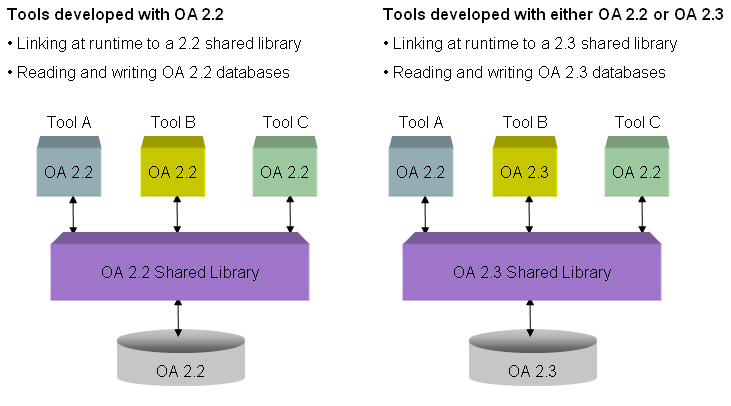

|
 |
 |
||||||
|
|
|
||||||
Starting with the 2.2 release, OpenAccess has added mechanisms to allow compatibility when future releases occur. Compatibility is a target both for API compatibility (allowing old programs to run on new releases without recompiling) and for database compatibility (allowing applications on new releases to read older databases).
OpenAccess has previously provided API compatibility within a given release version. So the various versions of 2.0, such as 2.0.4 and 2.0.5, are drop-in compatible. This means that when newer shared libraries are installed, the applications that worked on earlier versions will continue to run without any change or re-link (much less re-compile). This allows functions to be added in newer releases, but it requires that older functions never change their signature or be removed.
The 2.2 release is targeting API compatibility for one major revision back. In other words, the OpenAccess 2.3 shared libraries will allow applications that work on version 2.2 to continue to work. Applications based on different versions of the API will be able to release asynchronously and still interoperate. When these applications are running on the 2.3 version of the OpenAccess implementation, the databases that they use will be 2.3 databases.

C++ namespaces will be used to distinguish between the OpenAccess 2.2 API and the OpenAccess 2.3 API.
OpenAccess_4 initially.
oa namespace alias is also provided.
oa
oa:: OpenAccess_4:: The using declaration is not present in any OpenAccess public header files.
OpenAccess has modified the format of its on-disk representation to allow certain changes to the data to be implemented in a way that will still allow compatibility with older databases. This will permit certain additions to the data model within the 2.2 stream.
As new capabilities are added to OpenAccess and its data model is expanded, there will be a need to examine the trade-offs between providing new data in a compatible fashion and requiring that databases be translated, or that applications use an incompatible API for the new features. OpenAccess is a high-performance database that is critical to the performance of the applications that run on it, and providing compatibility requires trade-offs in performance.
Future development will have to make those trade-offs. At some point, changes will again require that databases be translated to a newer format.

Copyright © 2003-2010 Cadence Design Systems, Inc.
All rights reserved.